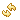
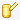

CMSIS Pack Manager
The Pack Manager perspective offers the following functionality:
- Install or update software packs that are available on the Internet.
- List devices and boards which are supported by software packs.
- List example projects that can be copied into the Eclipse workspace.
Use the following menu commands:
- Window → Perspective → Open Perspective → Other → CMSIS Pack Manager opens the perspective
- Window → Preferences → CMSIS Packs to setup the root folder for storing packs:
- For Windows, the default root folder is set to %LOCALAPPDATA%\Arm\Packs
- For Linux, the default root folder is set to $XDG_CACHE_HOME/arm/packs (where $XDG_CACHE_HOME defaults to $HOME/.cache)
To search for relevant packs or examples, select an item in the Devices or Boards view.
The following toolbar buttons manage software packs:
-

After installing a pack manually, you might need to refresh the pack information. Use this button to refresh
the view by just re-reading the current disk contents.
-
Check for pack updates on the web. To accomplish this,
Pack Manager connects to www.keil.com/pack and checks
the index file.
-
Install software packs manually.
-
Launch the file browser to select a folder that can contain one or more extracted software packs. These packs will be copied to the pack folder.
-

Launch the file browser to select a folder that contains an extracted software pack. Refer to Using Local Repositories for more information.
The CMSIS Pack Manager offers the following views:
- Packs: show available software packs that can be installed, updated, or removed.
- Examples: show example projects that can be copied into the workspace.
- Devices: list devices that are supported in available software packs.
- Boards: list boards that are supported in available software packs.
- Pack Properties: show the content of a selected software pack.
See also: